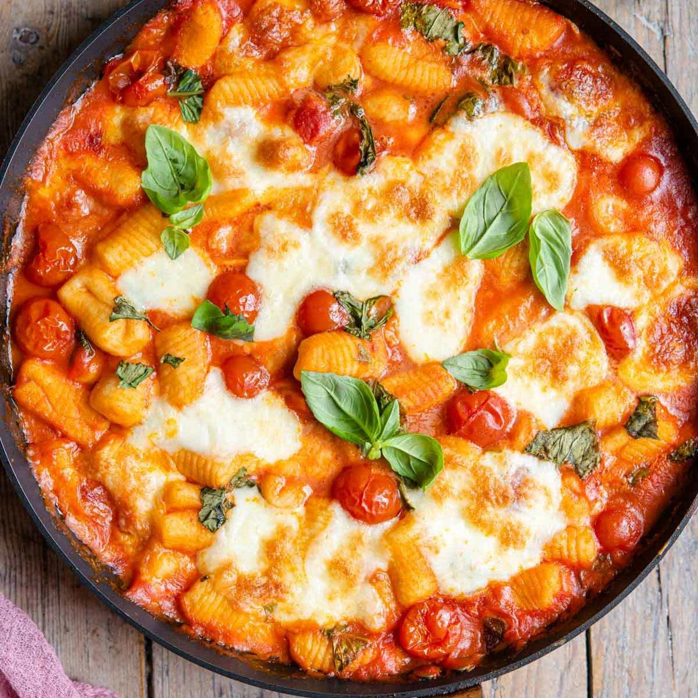

Gnocchi alla sorrentina

Description
Gnocchi alla sorrentina is an incredible italian dish made
with soft and light potato gnocchi baked in a rich and
delicious tomato sauce with bubbly mozzarella cheese and
fresh basil
Ingredients
- Gnocchi- homemade or a good brand storebought gnocchi.
- Tomatoes- either canned tomatoes or fresh crushed tomatoes. It is recommended to use cherry tomatoes because they are sweeter.
- Garlic- it has to be fresh garlic.
- Mozzarella- use balls of mozzarella and not pre-grated
- Basil- you don't need a lot but use fresh basil, don't use dried
Step by step
- To make the sauce, saute the garlic in a little olive oil in a large pan or skillet.
- Add the canned pomodorini tomatoes with a good pinch of salt and simmer the sauce for 10 minutes breaking up the tomatoes enough so they burst open. Once simmered add some mozzarella and basil and stir to combine.
- Meanwhile, bring a large pot of salted water to a boil and cook the gnocchi until they float to the surface.
- Remove the gnocchi with a slotted spoon and add to the tomato sauce, toss to coat. If your pan or skillet is not oven-proof then transfer the gnocchi to an oven-proof baking dish.
- Top the gnocchi with more mozzarella and bake for 20 minutes until the mozzarella cheese is melted, bubbling and golden.